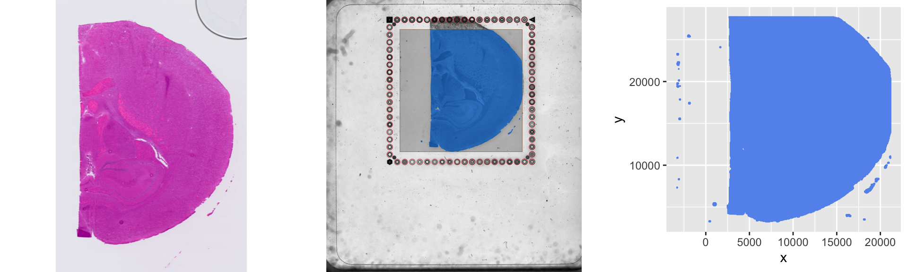
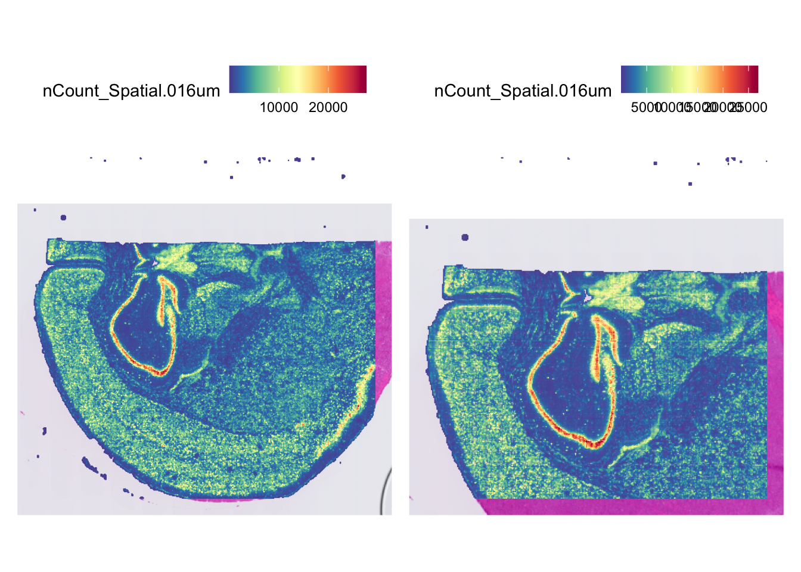

# subsetting_slide.R is for subsetting the spatial single-cell data utilized in the Introduction to Spatial Single-Cell RNA-seq workshop provided by the Harvard Chan Bioinformatics Core
# Written by: <Your name>
# Written on: <Date>
# Usage example:
# Rscript subsetting_slide.RSubsetting a Slide
Tasks left on lesson
- Improve exercise
- Run lesson on O2 in order to get directory tree and images following the loop then put those parts in the download.sh and embed them in the lesson
- Polish
Approximate time: 45 minutes
Learning Objectives
- Describe the coordinate systems for Visium HD data
- Subset a spatial scRNA-seq slide
Background
When organizing this workshop, spatial single-cell data can be quite large and the result is that analyzing it can be quite memory intensive. In order to focus on the techniques, methods and interpretation of results, we needed to reduce the size of our dataset to work better on our participants computers. We provide the downstream output from this subsetting for our analysis, but we have created these materials should you want to know how to do this yourself.
Set-up
Open a new R Script by going File → New File → R Script. Save the file as “subsetting_slide.R”. Provide the R Script with some information about the script:
In order to subset the spatial single-cell data, we will need to load three packages:
# Load libraries
library(tidyverse)
library(Seurat)
library(DropletUtils)
library(cowplot)
library(png)
library(grid)
library(magick)
library(arrow)Loading the Seurat Object
We can start the subsetting process by loading in our entire dataset into a Seurat object called seurat_obj using the Load10X_Spatial() function:
# Load spatial data into Seurat object
seurat_obj <- Load10X_Spatial(
data.dir = "data/fresh_frozen",
bin.size = 16,
slice = "fresh_frozen")The parameters we are using are:
data.dir- The directory where the H5 file is located should contain a subdirectory called “spatial” that holds the image databin.size- The size in µm that we want to use for the binningslice- The name of the image
We can inspect this Seurat object with:
# Inspect the Seurat object
seurat_objAn object of class Seurat
19059 features across 113885 samples within 1 assay
Active assay: Spatial.016um (19059 features, 0 variable features)
1 layer present: counts
1 spatial field of view present: fresh_frozen.016umWe can see that this object has 19059 genes 113885 cells.
The Two Coordinate Spaces
Pixel Coordinate Space
Within this Seurat object, we also have coordinate information stored that we will need to use to subset our slide. In order to extract this coordinate information from the Seurat object, we will use the GetTissueCoordinates() function:
# Obtain coordinates for our spatial data
coordinates <- GetTissueCoordinates(seurat_obj)Let’s get an intuition for what this data looks like:
# Inspect the coordinates table
View(coordinates)We have subsetted the first few dozen lines in the table below:
The x and y values correspond to the spot in pixel space that Seurat will be using.
We can compare the original image to the boundaries of the slide area to the coordinates obtained from the data.
# Create plot with coordinates
coordinate_plot <- ggplot(coordinates) +
geom_point(aes(x = x, y = y), size = 0.0001, color = "cornflowerblue")
# Read in and orient the low resolution image
lowres_image <- image_read("data/fresh_frozen/spatial/tissue_lowres_image.png") %>%
image_rotate(degrees = 270) %>%
as.raster(interpolate = TRUE) %>%
rasterGrob()
# Read in and orient the detected tissue image
detected_image <- image_read("data/fresh_frozen/spatial/detected_tissue_image.jpg") %>%
image_rotate(degrees = 90) %>%
image_flop() %>%
as.raster(interpolate = TRUE) %>%
rasterGrob()
# Plot three image images next to each other
plot_grid(lowres_image, detected_image, coordinate_plot, nrow = 1, align = 'h')
Array Coordinate Space
Let’s dig a bit deeper into how the spatial data is stored. The storage of the data comes from a parquet file that is provided with the data. We can read this parquet file using read_parquet from the arrow package:
# Read parquet file
parquet_df <- read_parquet("data/fresh_frozen/binned_outputs/square_016um/spatial/tissue_positions.parquet")We can inspect what this parquet file looks like with:
# Inspect parquet file
View(parquet_df)The first few dozen lines will look like:
In order to get a sense for this table, let’s investigate each column:
barcode- This is the barcode for the square on the slide. The format is:- [ident]_[bin_size]_[array_row]_[array_col]-[suffix] where:
ident- The identbin_size- The size of the binarray_row- The row number in the array for a given bin sizearray_col- The column number in the array for a given bin sizesuffix- An optional suffix reserved for technical reasons (usually is-1)
- [ident]_[bin_size]_[array_row]_[array_col]-[suffix] where:
in_tissue- A binary descriptor for whether Space Ranger believes this is in the tissue or not0- Not in the tissue1- In the tissue
array_row- The row number in the array for a given bin sizearray_col- The column number in the array for a given bin sizepxl_row_in_fullres- Location of row in pixel spacepxl_col_in_fullres- Location of column in pixel space
Drawing Connections Between the Two Coordinate Spaces
The array_row and array_col are directly tied to pxl_row_in_fullres and pxl_col_in_fullres, respectively. However the data has undergone an affine transformation within Space Ranger that considers a scale factor (how many pixels per bin), an offset and a rotation. In short, the array_row and array_col are ralated to pxl_row_in_fullres and pxl_col_in_fullres and the parquet file ties them together. Let’s evaluate this by looking at the first line from the parquet file:
options(pillar.sigfig = 7)
parquet_df[parquet_df$barcode == "s_016um_00107_00066-1",]# A tibble: 1 × 6
barcode in_tissue array_row array_col pxl_row_in_fullres pxl_col_in_fullres
<chr> <int> <int> <int> <dbl> <dbl>
1 s_016um_0… 1 107 66 2977.619 23843.36Now let’s look at that same cell in our coordinates object
coordinates[coordinates$cell == "s_016um_00107_00066-1",] x y cell
s_016um_00107_00066-1 2977.619 23843.36 s_016um_00107_00066-1We can observe that pxl_row_in_fullres in the parquet file is the x column from Seurat’s GetTissueCoordinates() function and pxl_col_in_fullres in the parquet file is the y column from Seurat’s GetTissueCoordinates() function.
Scope of data
We can inspect the number of bins that Space Ranger determine were in a tissue by inspecting the Seurat object:
ncol(seurat_obj)[1] 113885This data is also encoded in the parquet file within the in_tissue column where 0 represent not in the tissue and 1 represents in the tissue.
table(parquet_df$in_tissue)
0 1
61676 113885 From this we can see that Seurat has subsampled our dataset to only include the bins that Space Ranger detected as being within the tissue.
Note
If we wanted to include all pixels (with and without tissue), we could have used the filter.matrix = FALSE option in Load10X_Spatial())
Exercise
Run the Load10X_Spatial() function again and also add the filter.matrix = FALSE option and assign it to exercise_obj. Pull the coordinates with the GetTissueCoordinates() function and assigning them to exercise_coordinates.
- Determine the
exercise_coordinatesobject to determine the number of rows of and the number of.
# Load spatial data into Seurat object
exercise_obj <- Load10X_Spatial(
data.dir = "data/fresh_frozen",
bin.size = 16,
slice = "fresh_frozen",
filter.matrix = FALSE)
# Extract tissue coordinates from the Seurat object
exercise_coordinates <- GetTissueCoordinates(exercise_obj)In a single 6.5mm x 6.5mm capture area from Visium HD, we would expect that to correspond to about 20,000 pixels by 20,000 pixels. Do our expectations match our observed data?
By comparing the dimensions of
coordinates, which only includes coordinates for locations that Space Ranger detected tissue, andexercise_coordinates, which contains all coordinates with and without tissue detected by Space Ranger, how many pixels didn’t have tissue detected in them?
After completing this exercise, be sure to remove exercise_obj and exercise_coordinates from our R environment to save on memory by using:
# Remove exercise Seurat object
rm(exercise_obj)
# Remove exercise coordinate object
rm(exercise_coordinates)Subsetting the Seurat Object
Now that we have an understanding of the coordinates, let’s go ahead and subset our coordinates based upon the region we will like to focus on in this workshop:
# Set x and y bounds for subsetting image
x_min <- -Inf
x_max <- 15114
y_min <- -Inf
y_max <- 21517
# Extract bin barcodes based on the defined x and y bounds
subsetted_bins <- coordinates %>%
subset((x > x_min & x < x_max) &
(y > y_min & y < y_max)) %>%
row.names()The output of this subsetting should be bin names that fit this critera for x and y bounds. We can inspect the object with:
# Inspect subsetted bin names
head(subsetted_bins)[1] "s_016um_00126_00213-1" "s_016um_00158_00414-1" "s_016um_00242_00130-1"
[4] "s_016um_00230_00364-1" "s_016um_00280_00313-1" "s_016um_00184_00346-1"We can confirm that this subsetting was done appropriately, by subsetting the coordinates object by our subsetted_bins names.
coordinates[subsetted_bins,] %>%
head() x y cell
s_016um_00126_00213-1 4082.946 15247.300 s_016um_00126_00213-1
s_016um_00158_00414-1 5946.160 3493.118 s_016um_00158_00414-1
s_016um_00242_00130-1 10864.771 20095.018 s_016um_00242_00130-1
s_016um_00230_00364-1 10155.541 6413.372 s_016um_00230_00364-1
s_016um_00280_00313-1 13079.266 9393.100 s_016um_00280_00313-1
s_016um_00184_00346-1 7467.918 7467.975 s_016um_00184_00346-1From here we can see our pixels are all within the pixel range that we subsetted by, so we feel confident that our subsetting was appropriate.
Note
Sanity checks like the above check may feel unnecessary but they are really important for good data analysis practices. It oftentimes takes less than a few moments to inspect and can save you lots of time downstream when you are debugging code.
Let’s go ahead and start subsetting our Seurat object. This will happen in three parts:
- Creating a new column,
filter, inmeta.dataof the Seurat object - Assigning the values of
TRUEorFALSEfor bins to be removed or kept, respectively - Subsetting the Seurat object based about the data in the
filtercolumn ofmeta.data
# Label a column called filter for TRUE
seurat_obj$filter <- TRUE
# Re-assign the value of FALSE to the filter column if the bin is within subsetted_bins
seurat_obj@meta.data[subsetted_bins, "filter"] <- FALSE
# Retain the bins which have FALSE for filter in the meta data
seurat_obj_filt <- subset(seurat_obj, filter == FALSE)Just like we did previously when subsetting coordinates, let’s confirm that we are subsetting the correct bins.
# Inspect the first few lines of coordinates to ensure they match our expectation
GetTissueCoordinates(seurat_obj_filt) %>%
head() x y cell
s_016um_00126_00213-1 4082.946 15247.300 s_016um_00126_00213-1
s_016um_00158_00414-1 5946.160 3493.118 s_016um_00158_00414-1
s_016um_00242_00130-1 10864.771 20095.018 s_016um_00242_00130-1
s_016um_00230_00364-1 10155.541 6413.372 s_016um_00230_00364-1
s_016um_00280_00313-1 13079.266 9393.100 s_016um_00280_00313-1
s_016um_00184_00346-1 7467.918 7467.975 s_016um_00184_00346-1Last, we can use the SpatialFeaturePlot() function from Seurat to compare the before and after of subsetting.
# Visual the original image and the subsetted image next to each other
SpatialFeaturePlot(seurat_obj, "nCount_Spatial.016um", pt.size.factor = 3) +
SpatialFeaturePlot(seurat_obj_filt, "nCount_Spatial.016um", pt.size.factor = 3)
Writing Subsetted Data Directory
It looks like we have correctly subsetted out data and now we are ready to create a directory to hold our data. This will make it easier in the future to work with our data, because we can use the Load10X_Spatial() function from Seurat to read in our subsetted data rather than performing the subsetting again.
We are going to start by creating a directory structure to hold our subsetted data:
dir.create(paste0("data_filtered/"))
dir.create(paste0("data_filtered/fresh_frozen/"))
dir.create(paste0("data_filtered/fresh_frozen/binned_outputs/"))
dir.create(paste0("data_filtered/fresh_frozen/binned_outputs/square_016um/"))
dir.create(paste0("data_filtered/fresh_frozen/binned_outputs/square_016um/spatial/"))The directory structure should look like:
data_filtered/
└── fresh_frozen
└── binned_outputs
└── square_016um
├── filtered_feature_bc_matrix.h5
└── spatial
├── scalefactors_json.json
├── tissue_lowres_image.png
└── tissue_positions.parquetNow we will populate this directory with the files needed to be able to run the Load10X_Spatial() function in the future.
# Copy scale factors JSON to new directory
file.copy(
from = "data/fresh_frozen/binned_outputs/square_016um/spatial/scalefactors_json.json",
to = "data_filtered/fresh_frozen/binned_outputs/square_016um/spatial/")
# Copy tissue positions parquet file to new directory
file.copy(
from = "data/fresh_frozen/binned_outputs/square_016um/spatial/tissue_positions.parquet",
to = "data_filtered/fresh_frozen/binned_outputs/square_016um/spatial/")
# Copy low resolution PNG to new directory
file.copy(
from = "data/fresh_frozen/binned_outputs/square_016um/spatial/tissue_lowres_image.png",
to = "data_filtered/fresh_frozen/binned_outputs/square_016um/spatial/")
# Write counts to hd5 file
write10xCounts("data_filtered/fresh_frozen/binned_outputs/square_016um/filtered_feature_bc_matrix.h5",
x=LayerData(seurat_obj_filt),
barcodes=colnames(seurat_obj_filt),
gene.id=rownames(seurat_obj_filt),
version="3",
type="HDF5",
overwrite = TRUE)After writing and copying the files the file directory should look like this:
data_filtered/
└── fresh_frozen
└── binned_outputs
└── square_016um
├── filtered_feature_bc_matrix.h5
└── spatial
├── scalefactors_json.json
├── tissue_lowres_image.png
└── tissue_positions.parquetAutomate subsetting by looping through samples and bins
Now we have processed a single bin (16μm) for a single sample (fresh_frozen). However, we would like to process our data for 8μm and 16μm for both “fresh_frozen” and “fixed_frozen” This process can be automated by using the same process as above, but looping through both bin sizes and both samples. Due to memory constraints on some laptops, you many not be able to run the code for the remaining parts of the lesson. It requires ~32Gb of RAM to execute.
Setting variables
We are going to set-up the the variables that we would like to loop through (bin size and sample) and also set our boundaries for where to subset our sample for. The index of the folders vector is the sample index for the boundary vectors (x_min, x_max, y_min, y_max).For example, the xmin of -Inf corresponds to the fresh_frozen sample while the xmin of 7205.1 corresponds to the fixed_frozen sample.
# DO NOT RUN
bins <- c("008", "016")
folders <- c("fresh_frozen", "fixed_frozen")
x_min <- c(-Inf, 7205.1)
x_max <- c(15114, Inf)
y_min <- c(-Inf, -1592)
y_max <- c(21517, 17735)The code below will allow us to loop through the different samples and bin sizes, adding them to a data_filtered/.
# DO NOT RUN
for (folder in folders) {
dir.create(paste0("data_filtered/", folder, "/binned_outputs/"), recursive = TRUE)
for (bin in bins) {
path_bin <- paste0("data_filtered/", folder, "/binned_outputs/square_", bin, "um")
dir.create(path_bin, recursive = TRUE)
# Copy spatial images from original folder
dir.create(paste0(path_bin, "/spatial"), recursive = TRUE)
path_json <- paste0("data/", folder, "/binned_outputs/square_", bin,
"um/spatial/scalefactors_json.json")
path_parq <- paste0("data/", folder, "/binned_outputs/square_", bin,
"um/spatial/tissue_positions.parquet")
path_png <- paste0("data/", folder, "/binned_outputs/square_", bin,
"um/spatial/tissue_lowres_image.png")
files_spatial <- c(path_json, path_parq, path_png)
file.copy(files_spatial,paste0(path_bin, "/spatial"))
# Load object
obj <- Load10X_Spatial(
data.dir = paste0("data/", folder),
bin.size = c(as.integer(bin)),
slice = folder)
# Cells to keep based on coordinates
coords <- GetTissueCoordinates(obj)
cells <- coords %>%
subset((x > x_min[which(folders == folder)] & x < x_max[which(folders == folder)]) &
(y > y_min[which(folders == folder)] & y < y_max[which(folders == folder)])) %>%
row.names()
# Subset object
obj$filter <- TRUE
obj@meta.data[cells, "filter"] <- FALSE
obj_filt <- subset(obj, filter == FALSE)
p <- SpatialFeaturePlot(obj, paste0("nCount_Spatial.", bin, "um"), pt.size.factor = 3) +
SpatialFeaturePlot(obj_filt, paste0("nCount_Spatial.", bin, "um"), pt.size.factor = 3)
print(p)
path_h5 <- paste0(path_bin, "/filtered_feature_bc_matrix.h5")
write10xCounts(path_h5,
x=LayerData(obj_filt),
barcodes=colnames(obj_filt),
gene.id=rownames(obj_filt),
version="3",
type="HDF5",
overwrite = TRUE)
rm(obj)
rm(obj_filt)
}
}Test Reading in fresh_frozen Bin Sizes
If we had run been able to run the above for loops, our directory structure would now look like:
With this directory structure, let’s go ahead and load in the “fresh_frozen” sample for the 16μm bin size:
# DO NOT RUN
# Load fresh_frozen 16μm
fresh_16 <- Load10X_Spatial(
data.dir = "data_filtered/fresh_frozen",
bin.size = 16,
slice = "fresh")Next we will load in the “fresh_frozen” sample for the 8μm bin size:
# DO NOT RUN
# Load fresh_frozen 8μm
fresh_8 <- Load10X_Spatial(
data.dir = "data_filtered/fresh_frozen",
bin.size = 8,
slice = "fresh")We can confirm that the number of bins in the fresh_8 is greater than the number of bins in the fresh_16 as we would expect:
# DO NOT RUN
# Number of bins in the 8μm fresh_frozen sample
ncol(fresh_8)
# Number of bins in the 16μm fresh_frozen sample
ncol(fresh_16)Lastly, we can visualize both bin sizes for our “fresh_frozen” samples side-by-side using SpatialFeaturePlot():
# DO NOT RUN
# Compare SpatialFeaturePlot of fresh_8 and fresh_16
SpatialFeaturePlot(fresh_8, "nCount_Spatial.008um", pt.size.factor = 3) |
SpatialFeaturePlot(fresh_16, "nCount_Spatial.016um", pt.size.factor = 3)Test Reading in fixed_frozen Bin Sizes
We will iterate those steps for the “fixed_frozen” sample:. First, we will read in the 16μm bin size:
# DO NOT RUN
# Load fixed_frozen 16μm
fixed_16 <- Load10X_Spatial(
data.dir = "data_filtered/fixed_frozen",
bin.size = 16,
slice = "fixed")Next, we will read in the 8μm bin size for the “fixed_frozen” sample:
# DO NOT RUN
# Load fixed_frozen 8μm
fixed_8 <- Load10X_Spatial(
data.dir = "data_filtered/fixed_frozen",
bin.size = 8,
slice = "fixed")Once again, we will do a check to ensure that the number of bins in the fixed_8 is greater than the number of bins in the fixed_16 as we would expect:
# DO NOT RUN
# Number of bins in the 8μm fixed_frozen sample
ncol(fixed_8)
# Number of bins in the 16μm fixed_frozen sample
ncol(fixed_16)Lastly, we can check that both bin sizes have been subsetted correctly and view them with SpatialFeaturePlot():
# DO NOT RUN
# Compare SpatialFeaturePlot of fixed_8 and fixed_16
SpatialFeaturePlot(fixed_8, "nCount_Spatial.008um", pt.size.factor = 3) |
SpatialFeaturePlot(fixed_16, "nCount_Spatial.016um", pt.size.factor = 3)Merging a Bin Size
With our sample looking appropriate, we can now merge the samples with the same bin size into a single Seurat object. This can be done using Seurat’s merge() function.
Merging the 8μm Bin Size
First, we will merge the 8μm bin size:
# DO NOT RUN
# Merge two sample together
merged_8 <- merge(fixed_8, fresh_8)However, when we use the merge() function in Seurat, it keeps the counts matrices of previously fixed_8 and fresh_8 in separate layers. We would like them to be in the same layer for our analysis, so we will use the JoinLayers() function from Seurat to do this:
# DO NOT RUN
# Combines combines the count matrices from different layers into a single layer
merged_8 <- JoinLayers(merged_8)We would like to visualize our data to ensure that everything looks like it was done correctly, but in order to do this appropriately, we will need to normalize the data using Seuart’s NormalizeData() function:
# DO NOT RUN
# Normalize data for the merged 8μm bin size
merged_8 <- NormalizeData(merged_8)We can visualize a gene that we are potentially interested in “Cck” using SpatialFeaturePlot():
# DO NOT RUN
# Visualize Cck for our merged 8μm bin size
SpatialFeaturePlot(merged_8,
features = "Cck",
pt.size.factor = 3)Merging the 16μm Bin Size
Now, we will merge the 16μm bin size following the same steps:
# DO NOT RUN
# Merge two sample together
merged_16 <- merge(fixed_16, fresh_16)Again, we will use the JoinLayers() to combine the counts matrices of the previously fixed_16 and fresh_16 :
# DO NOT RUN
# Combines combines the count matrices from different layers into a single layer
merged_16 <- JoinLayers(merged_16)We will normalize our 16μm data for visualization with Seuart’s NormalizeData() function:
# DO NOT RUN
# Normalize data for the merged 16μm bin size
merged_16 <- NormalizeData(merged_16)We can visualize a gene that we are potentially interested in “Cck” using SpatialFeaturePlot() on the 16μm data:
# DO NOT RUN
# Visualize Cck for our merged 16μm bin size
SpatialFeaturePlot(merged_16,
features = "Cck",
pt.size.factor = 3)At this point we have successfully subsetted out data for two different bin sizes and from two separate samples while performing appropriate checks along the way to ensure that our subsetting has been done correctly.